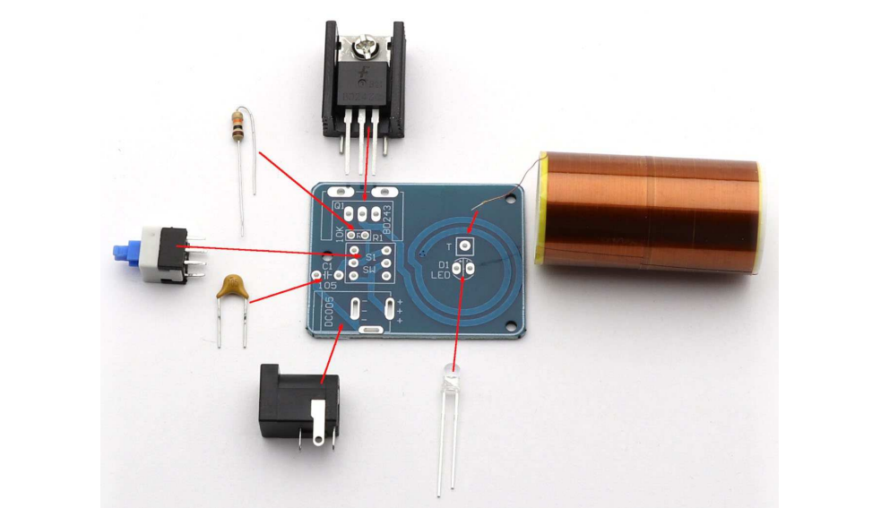
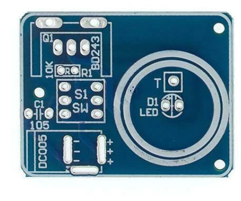

A Tesla tekercs egy olyan elektromos készülék, amelyet Nikola Tesla tervezett és fejlesztett ki az 1890-es években. A tekercs egy alacsony frekvenciás áramforrás, amely képes nagymértékben növelni az elektromos energia mennyiségét és minőségét.
A Tesla tekercs segítségével generálhatók nagymértékű túlfeszültségek és elektromos áramok, amelyeket a kutatás és a fejlesztés során lehet használni. A Tesla tekercs ma még mindig aktívan használják a tudományos kutatásban és a szórakoztatóiparban, mint például a villamos show-kban.
| Parts | Alkatrészek |
|---|---|
| PCB (Printed Circuit Board) | Nyomtatot Áramkör |
| BD243C Transistor | Tranzisztor |
| DC Jack | EgyenÁram Csatlkozó |
| Heatsink | Hűtőborda |
| 1 Blue LED | 1 Kék LED |
| 1 Switch | Nomógomb |
| 10KΩ Resistor | 10KΩ Ellenállás |
| 1UF Capacitor | 1UF Kondenzátor |

